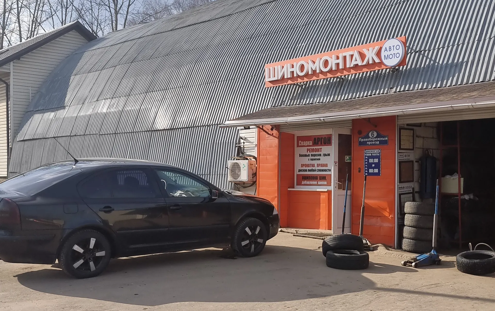
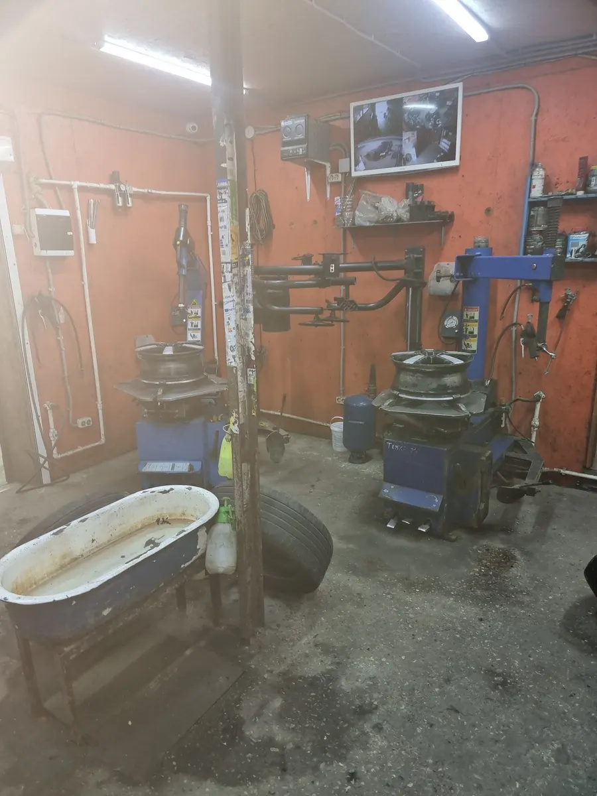
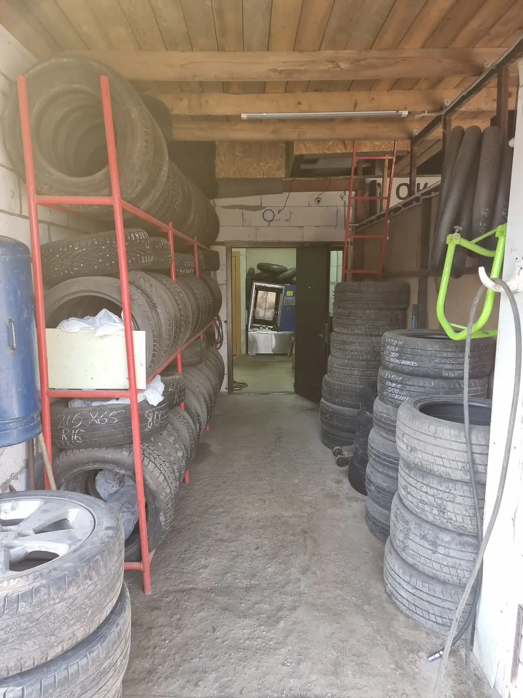
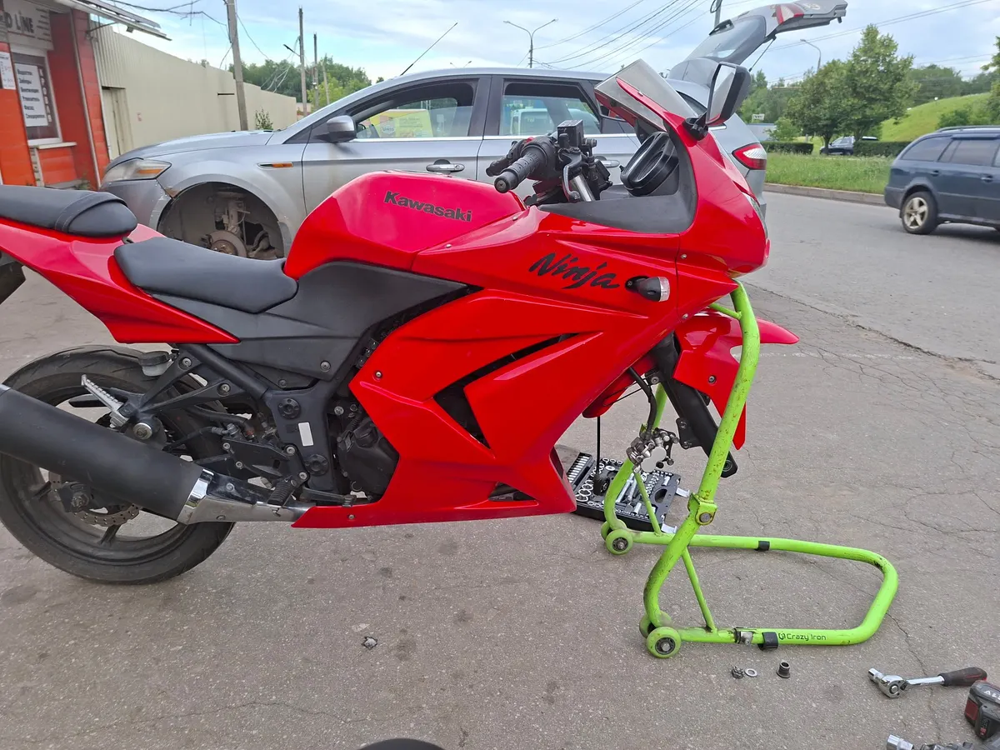

Шиномонтаж · ремонт дисков · Правобережный проезд, 6
Шиномонтаж и ремонт дисков в Калуге – до 23:00
Переобувка, ремонт боковых порезов, правка дисков, мотоциклы. Каждый день 08:00-23:00, в сезон лучше позвонить заранее.
- Каждый день 08:00-23:00
- Правка дисков и ремонт боковых порезов
- Автомобили и мотоциклы

Что делаем
Цена зависит от размера колёс и от работы. Прайс для сайта согласуем с владельцем, а пока цены уточняйте по телефону.
Колёса и шины
- Переобувка комплектаснять, перебортировать, отбалансировать, поставитьуточнить
- Балансировка колесауточнить
- Ремонт проколав том числе саморезомуточнить
- Боковой порез и грыжаремонт, на табличке у входа – с гарантиейуточнить
- Ошиповка шиндобавление шиповуточнить
- Датчики давлениязаменауточнить
Диски
- Правка литого дискауточнить
- Правка штампованного дискауточнить
- Прокатка дисковуточнить
- Аргонная сваркауказана на табличке у входауточнить
Мотоциклы и хранение
- Замена покрышек на мотоциклеуточнить
- Балансировка мотоколесауточнить
- Хранение шинпо отзывам, можно оставитьуточнить
Не нашли нужное? Позвоните и опишите, что с колесом: подскажут, возьмутся ли.
Как проходит
- 01
Позвонили или приехали
По телефону можно подобрать удобное время. По отзывам, прокол чинили и без записи, даже в сезон.
- 02
Мастер осмотрел колесо
Смотрит шину и диск, называет стоимость и берёт в работу. Перед началом попросите назвать сумму.
- 03
Колесо в работе
Станки для шин и дисков, балансировка. Ждать можно рядом, в небольшой зоне для клиентов.
- 04
Проверили и поехали
По отзывам, мастера проверяют давление и в остальных колёсах.



За что хвалят в отзывах
Чинят диски без сварки
«Выправили диск за пол часа без сварки. Отбалансировали - все отлично, вибрации нет» – пишет клиент.
Работают допоздна
«В выходной праздничный день - вечером! Единственные работали и починили прокол в колесе» – пишет клиент.
Берутся за мотоциклы
«На мотоцикле к ним приезжаю постоянно, замена покрышек и балансировка» – пишет клиент.
Объясняют, что с колесом
«Дали пару советов по эксплуатации низкопрофильной резины. Бесплатно еще проверили давление в остальных колесах» – пишет клиент.
Отзывы с Яндекс.Карт
«Отличный сервис. Давно был погнут диск, который последние дни стал заметно травить и спускать колесо. Тут мне оперативно все поправили. За 30 минут проблема была решена. Цены вполне адекватные. Так что рекомендую!»
Дарья С. · 9 сентября
«Ребята большие молодцы! Засадил на трассе в яму, дотянул до Калуги. Ближе к 8 вечера попал к ним. Взяли без вопросов, все сделали, поправили литой диск, заклеили колесо. Еще и поговорили интересно. Спасибо. Рекомендую.»
Иван КА · 2 ноября 2025
«Пробил колесо саморезом на трассе, ещё на одном датчик сработал. Жуткий ливень, ехать ещё 500 км. Объехал всё в округе, никто не делает. Ребята красавчики, за 10 мин залатали, второе проверили. Можно было бы поставить 10, поставил бы. Рекомендую»
Алексей Е. · 28 августа 2025
Отзывы с карточки на Яндекс.Картах, без правок.
Частые вопросы
Нужна ли запись?
Можно позвонить заранее: +7 (920) 614-50-05. Клиенты пишут, что в сезон много машин по записи, а прокол чинили и без записи.
Где вы находитесь?
Калуга, Правобережный проезд, 6. Вход под оранжевой вывеской «Шиномонтаж Авто-Мото» в здании с серой арочной крышей.
Сколько стоит переобувка?
Цена зависит от размера колёс и от работы. Позвоните, назовите размер и что нужно сделать, и перед началом работы уточните сумму.
Работаете в выходные и праздники?
Каждый день с 08:00 до 23:00. Клиентка пишет, что вечером в праздничный день они работали.
Берётесь за мотоциклы?
Да, по отзывам: замена покрышек и балансировка мотоколёс. Что именно подходит вашему мотоциклу, уточните по телефону.
Можно оставить шины на хранение?
Клиент пишет, что шины у них можно оставить. Условия и цену уточните по телефону.
Есть выездной фургон?
Клиент в отзыве 2024 года пишет про выездной фургон. Работает ли он сейчас и куда выезжает, уточните по телефону.
Позвоните – подберём время
- Адрес
- Правобережный проезд, 6, Калуга
- Часы
- Каждый день 08:00-23:00
- Телефон
- +7 (920) 614-50-05